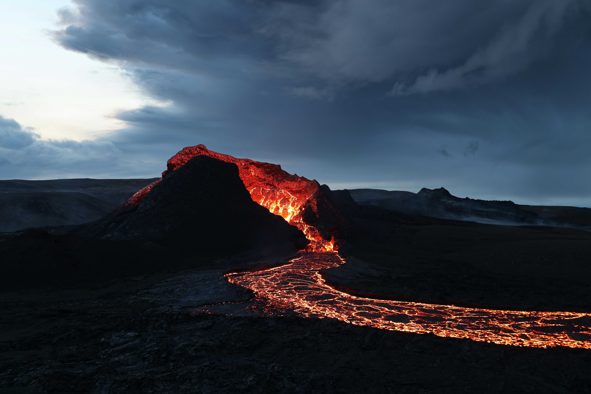

The island of Taniti has many exciting activities available. Whether you're exploring Taniti City, Yellow Leaf Bay, Merriton Landing, or any of our other locations, there's something for everyone.
|
 Fig10 Volcano |
| Taniti City's native architecture tours Phone Number: Address: |
| Snorkeling Phone Number: Address: |
| Volcano tours Phone Number: Address: |
| Explore Yellow Leaf Bay Phone Number: Address: |
| Explore Merriton Landing Phone Number: Address: |
| Explore Taniti's beaches Phone Number: Address: |
| Rainforest tours Phone Number: Address: |